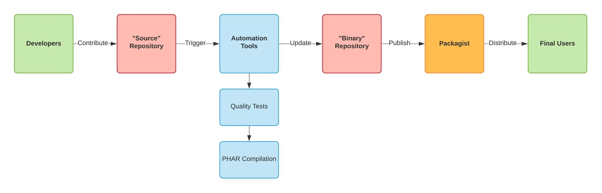

Compiling Symfony projects into PHAR
August 21, 2020
Most of the time, we use Composer to install tools developed in PHP, like any other library or framework. While this is the simplest method, it has a significant drawback in that you will automatically inherit the dependencies of these tools.
This drawback can quickly become a blocking problem if you require a multitude of tools since the risk of conflicts
between dependencies will be higher. The problem is the same if you install these tools in your projects or your HOME
directory (at the global level).
Architecture
To continue using Composer without this constraint, you could distribute the tool not as a library, but as a binary: a PHAR. But merely adding the binary to your current project next to the other files will not allow you to distribute it without your dependencies.
You will need two separate projects: a “source” project to work on the tool and a “binary” project to distribute it to your users without the need for additional dependencies.
Here is an illustration of the workflow under this kind of architecture.

I use humbug/box to compile my Symfony CLI projects. You can add this tool in the dependencies of your project, but I advise you to use it as a standalone to avoid the conflicts we mentioned earlier.
To make things a bit more straightforward, I’ve created a Docker image to use it without installing anything else than Docker.
1# Compiles the project into a PHAR archive.
2docker run --rm --interactive --tty --volume="$(pwd):/app" ajardin/humbug-box compile -vvvPreparing
Let’s create a new Symfony project.
1composer create-project symfony/skeleton my-console
2cd my-console && git init && git add . & git commit --message="Initial commit"Not everything is necessary when developing a CLI application. Even though Symfony skeleton is already extremely lightweight, we will simplify the configuration of our new project.
1rm -rf \
2 config/packages/prod/ \
3 config/packages/routing.yaml \
4 config/routes.yaml \
5 config/routes/ \
6 public/ \
7 src/Controller 1--- config/services.yaml
2+++ config/services.yaml
3- # controllers are imported separately to make sure services can be injected
4- # as action arguments even if you don't extend any base controller class
5- App\Controller\:
6- resource: '../src/Controller/'
7- tags: ['controller.service_arguments']
8-
9
10--- src/Kernel.php
11+++ src/Kernel.php
12- $routes->import('../config/{routes}/'.$this->environment.'/*.yaml');
13- $routes->import('../config/{routes}/*.yaml');
14-
15- if (is_file(\dirname(__DIR__).'/config/routes.yaml')) {
16- $routes->import('../config/{routes}.yaml');
17- } elseif (is_file($path = \dirname(__DIR__).'/config/routes.php')) {
18- (require $path)($routes->withPath($path), $this);
19- }
Your project is now (almost) ready to be compiled.
Compiling
Before going any further, it is crucial to know that the execution context within a PHAR is different from the one we are used to handling. A PHAR is a read-only archive where it is not possible to write any file. Therefore, it is mandatory to follow the steps described in the humbug/box documentation for Symfony:
- remove the assets installation in the
composer.jsonfile - put the application in prod mode with the
composer dump-env prodcommand - refresh and warm the application cache before compiling
To configure the compilation, you have to write a JSON file which is far from being verbose. The humbug/box documentation explains the available configuration parameters. I will let you take a look.
1--- a/composer.json
2+++ b/composer.json
3 "scripts": {
4 "auto-scripts": {
5- "cache:clear": "symfony-cmd",
6- "assets:install %PUBLIC_DIR%": "symfony-cmd"
7+ "cache:clear": "symfony-cmd"
8 },
9- "post-install-cmd": [
10- "@auto-scripts"
11- ],
12- "post-update-cmd": [
13+ "post-autoload-dump": [
14 "@auto-scripts"
15 ]
16 },
17
18--- a/box.json
19+++ b/box.json
20+{
21+ "main": "bin/console",
22+ "directories": [
23+ "config",
24+ "src",
25+ "vendor"
26+ ],
27+ "files": [
28+ ".env.local.php"
29+ ],
30+ "output": "build/my-console.phar"
31+}
You can now compile your project! 🚀
Bonus
As it is necessary to chain several commands, I usually fill them in a Makefile that will be used from my local
environment and in my CI/CD processes.
1##
2## ----------------------------------------------------------------------------
3## MY CONSOLE
4## ----------------------------------------------------------------------------
5##
6
7# Checks if the GITHUB_ACTIONS environment variable is defined,
8# useful for allowing the "--tty" flag locally but not in GitHub Actions.
9export TTY := $(shell if [ -z "$${GITHUB_ACTIONS}" ]; then echo "--tty"; else echo ""; fi)
10
11box: ## Compiles the project into a PHAR archive
12 composer dump-env prod
13 ./bin/console cache:clear
14 ./bin/console cache:warmup
15 docker run --rm --interactive $${TTY} --volume="$$(pwd):/app:delegated" ajardin/humbug-box compile -vvv
16 rm .env.local.php
17.PHONY: box
18
19help:
20 @grep -E '(^[a-zA-Z_-]+:.*?##.*$$)|(^##)' $(MAKEFILE_LIST) \
21 | awk 'BEGIN {FS = ":.*?## "}; {printf "\033[32m%-30s\033[0m %s\n", $$1, $$2}' \
22 | sed -e 's/\[32m##/[33m/'
23.DEFAULT_GOAL := help
Next time we will see how to automate the generation and distribution.